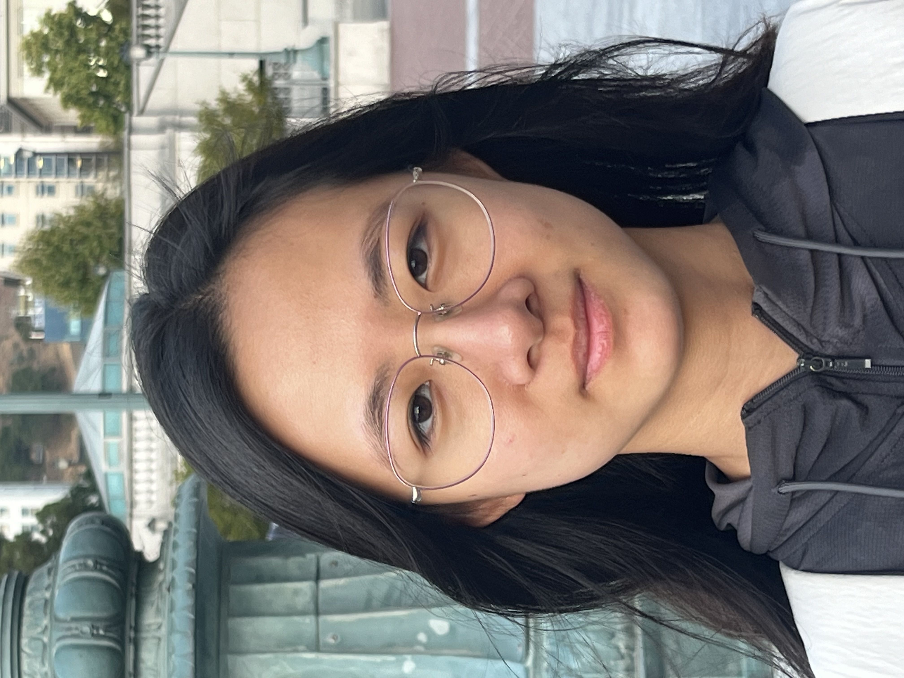
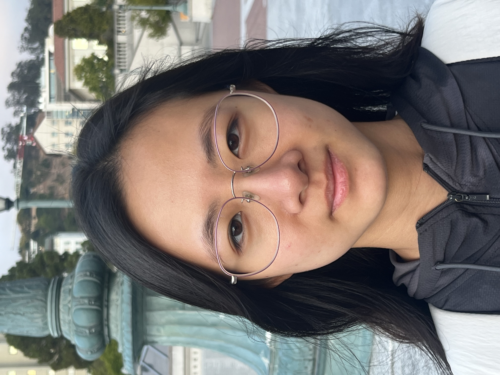
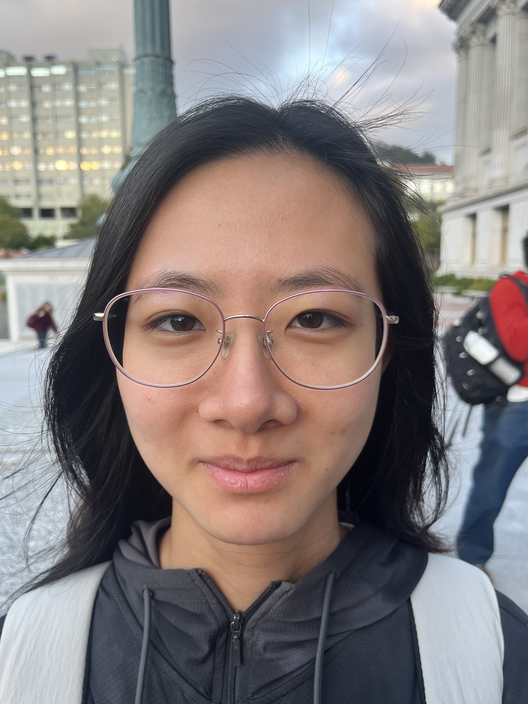
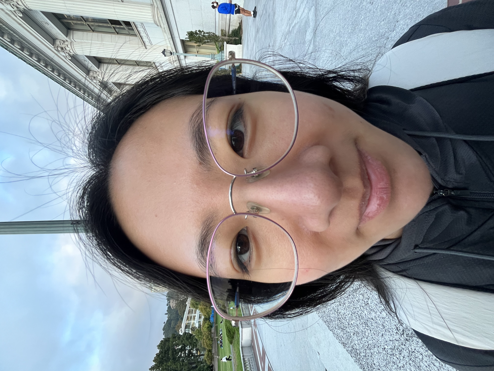
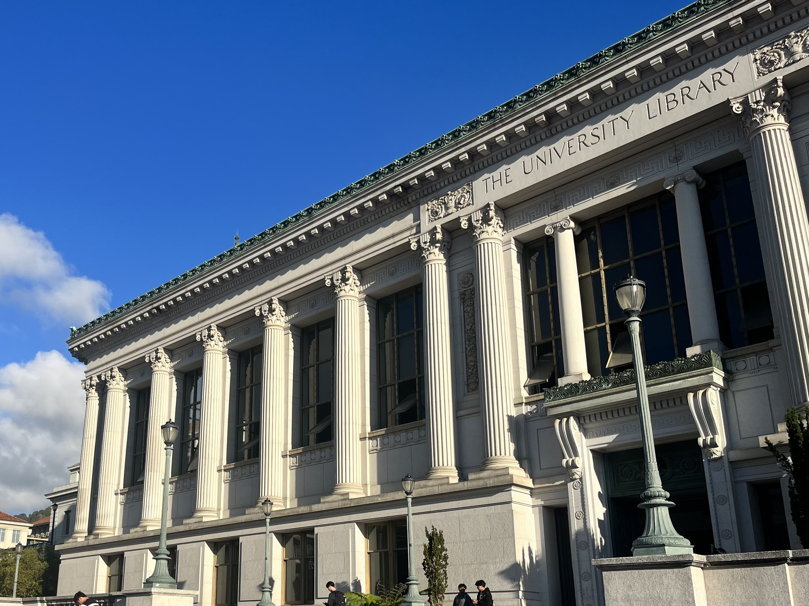
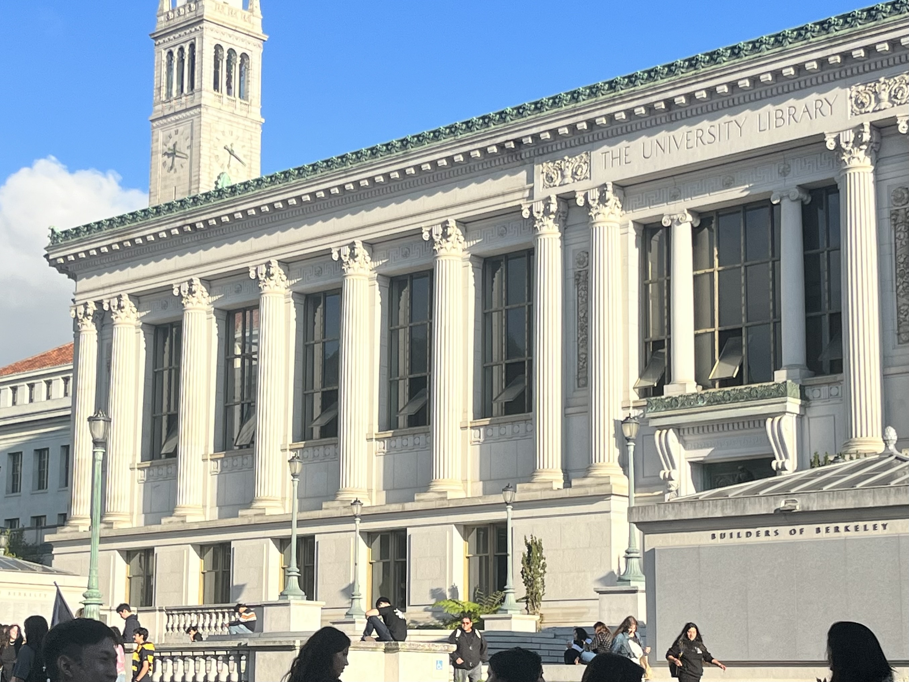
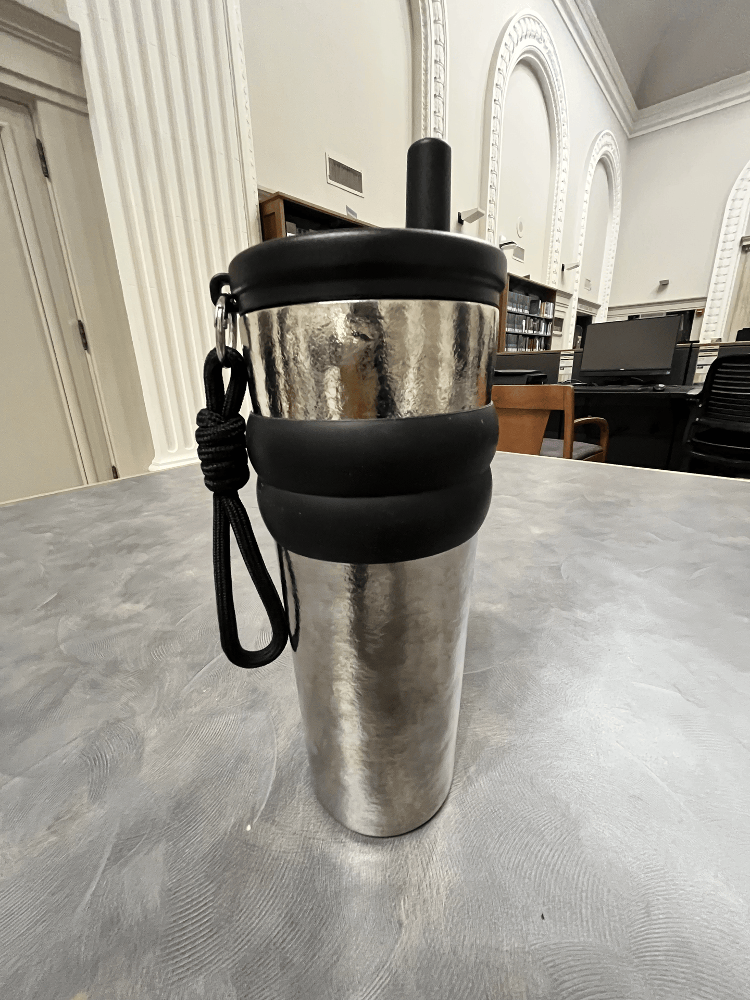

understanding the relationship between perspective, focal length/zoom, and the center of projection
Photos that are taken further away and zoomed in look much better than photos taken close up, since their perspective is more compressed and less distorted.




For an urban scene, I took the first photo zoomed in, and the second photo while being closer to the building. This has similar effect to the selfies, and the zoomed in photo is more flattened and compressed.


I created a dolly zoom (Vertigo shot) by moving my camera back while zooming in and keeping my water bottle roughly the same size.
